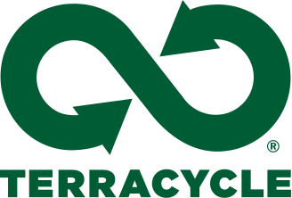
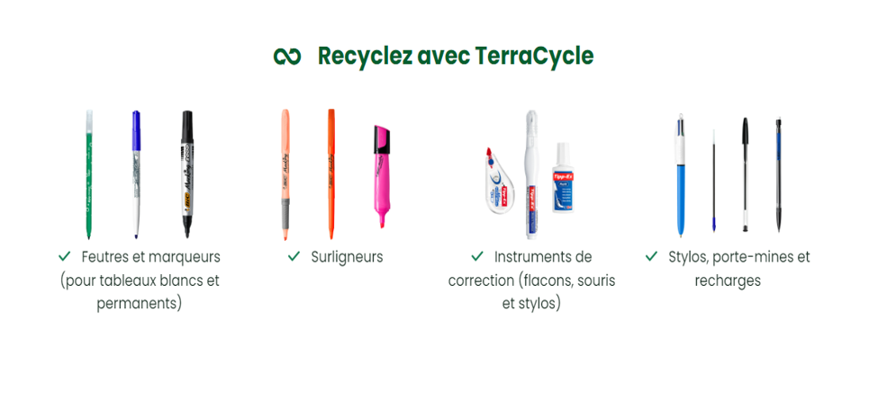
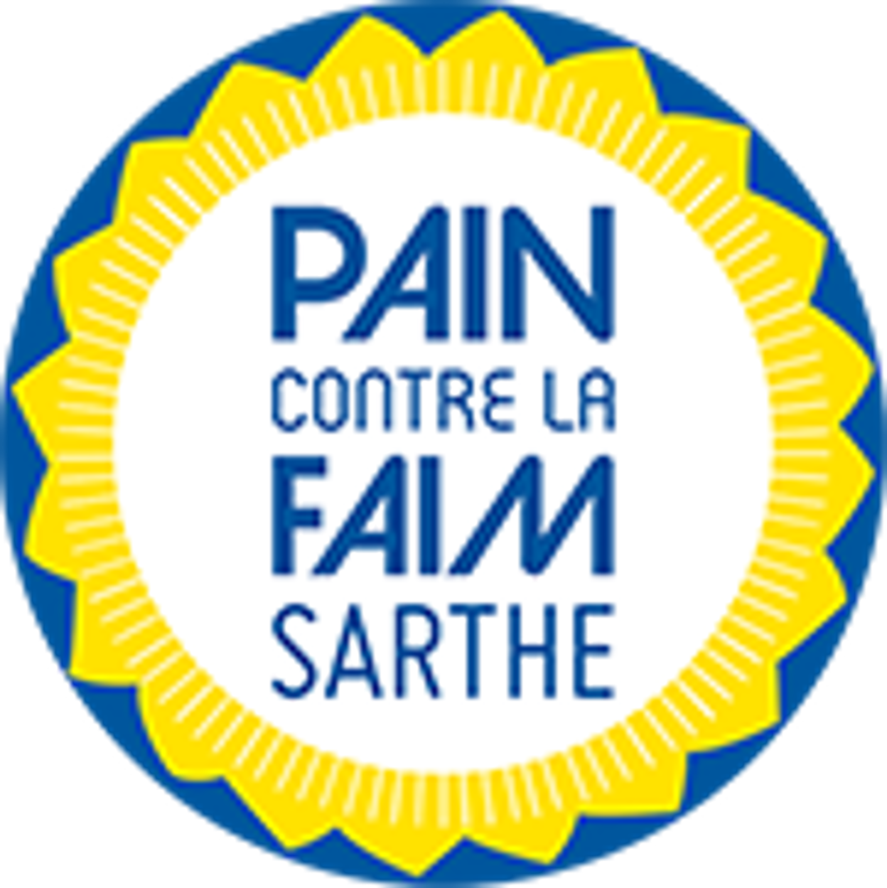

PROJET_HISTOIRE
Brieuc et Augustin 22/11/2023
C’est quoi le projet ?
Le but c’est de récupérer des instruments d'écriture usagés pour les recycler grâce à l’entreprise Terracycle. Puis de donner de l’argent à l’association Pain contre la faim
Comment la collecte de crayons usagés peut-elle aider l'association "Pain contre la Faim" ?
Que fait "Pain contre la Faim" de l'argent que nous lui fournissons?
Une partie de l'argent est consacrée à l'insertion des personnes en difficulté.
"Pain contre la Faim" utilise également les fonds pour soutenir des projets humanitaires dans le monde entier.
